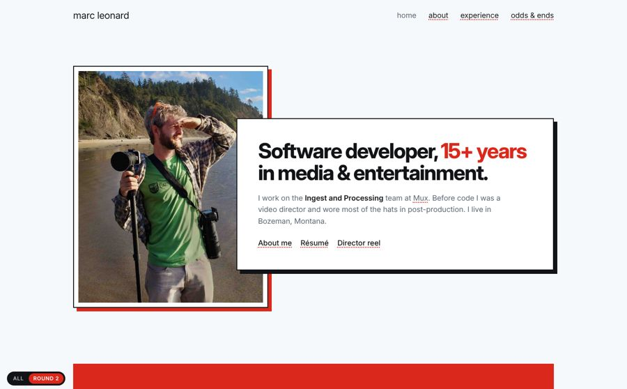
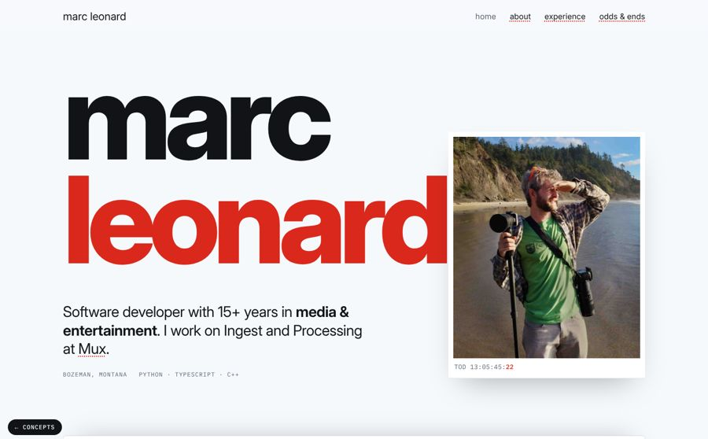
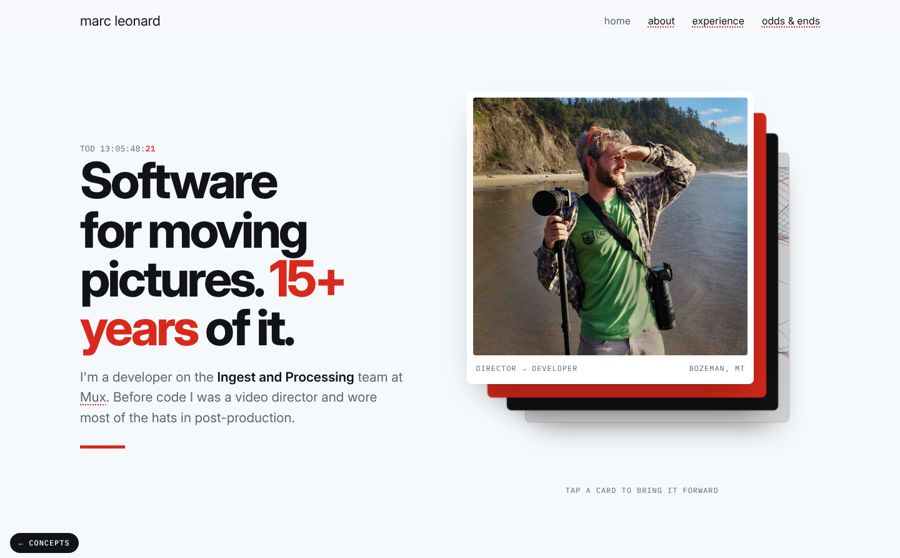
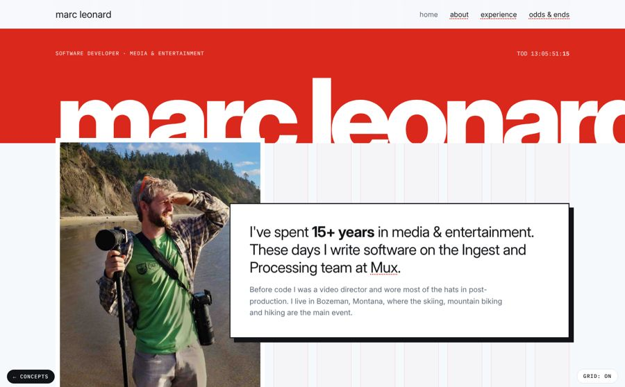

Same Swiss bones as the current site: Inter, the red, the dotted links, lowercase nav. Round 2 is the newest. The round 1 explorations below it are louder.
Built from your notes. The hero is the overlapping cards from Grid, set at a normal size. Sections are sheets that slide over each other as you scroll, with no scaling or dimming. Odds & Ends keeps the big red year. The only motion is scrolling, hover, and one short settle when the page loads. No timecode, no ticker.
open round 2 →
A giant name with your photo laid over it and drifting on scroll. Below it, four full-width cards (now, building, before, writing) pin and pile on top of each other as you scroll. Each one recedes as the next slides over.
open stack →
The hero is a cascade of project cards that shuffles itself every few seconds and tilts toward your cursor: a live timecode adder, an asset bin, a LineDream plot. Experience is a fan of overlapping index cards that spread open on hover.
open deck →
The 12-column grid drawn right on the page (press G to toggle). The red band and clipped headline come from your experience page. Hard-shadow cards break across columns and overlap and drift at different speeds.
open grid →